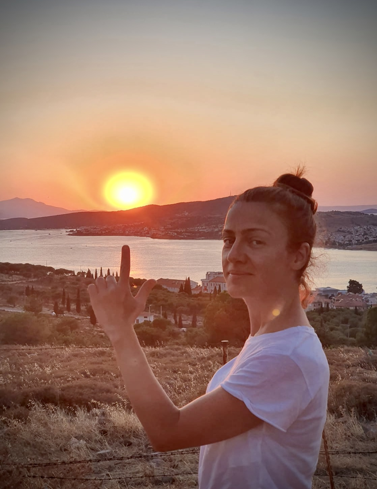

Hello,

About me
Hi I’m Berrak. I was born and brought up in Turkey. I have studied Economics at Anatolian University and I always wanted to get a master's degree, so I followed my heart and came to London. I did my MBA at Brunel University. I really liked England and I worked here ever since. I have a digital marketing background and I’m looking for a new challenge and to improve my employability.
I'm a positive, happy and self-motivated person. Outside of work, I like to keep my self fit and active. I was a member of Virgin Active and a member of the London Symphony Orchestra (LSO) community choir, until the coronavirus pandemic started.



Why coding?
Technology has made our lives easier, faster, and more comfortable, therefore the world becomes a better place to live. It is easier to communicate with people around the world through the internet, so I would like to be a part of projects, which have the social purpose of helping people particularly in times of stress. For instance, a number of good applications were developed to help people during the recent earthquake in Izmir, Turkey. It was quite fascinating to see how technology is helping people and saving lives.
Today coding has typically seen a men’s world, but it wasn’t the case in our early history. I am innovative, analytical and I enjoy problem-solving and love coding so far, and I want to learn as much as I can and show that women can also code as well as men and I would really appreciate the chance to get on the course.
Why FAC?
I was trying to learn coding by myself and I have been looking forward to an opportunity like this, so I’m thankful that my work coach referred me to Founders and Coders.
I have learned a lot during our group coaching sessions and group studies. It was quite intense and still a lot to learn, but when we got stuck our mentors were guiding, teaching, and encouraging us to continue. Collaborative learning is a part of this programme, I made very good friends. It was a great experience and I loved to be part of the community where everyone is helping each other.
Founders and Coders one of the best coding bootcamps in London and I am really proud to be a part of this global developer community.